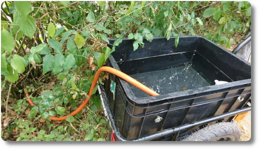

Hallo zusammen. Heute Mal ein Bilde von meinen regelmäßigen
Gieß-Aktionen. Wie in ganz vielen Gegenden in Deutschland ist es derzeit
auch bei uns unfassbar trocken und die ersten Bäume zeigen schon
deutliche Zeichen von Wasserunterversorgung. ☀ ☀ ☀ üòê
In meiner Stadt gibt es zwei öffentliche Wasserspender, deren Wasser
ständig läuft. Ich habe mir überlegt, das ich dieses Wasser lieber
nutzen möchte und an Büsche und Bäume in der Stadt verteile. Leider
kostet das recht viel Zeit, aber vielleicht hilft es dem ein oder
anderen Gewächs.
In meinen Fahrradanhänger passen etwa 40-50 Liter. Unten ein paar
ausgew√§hltes Bild. üòÖ Am Tag danach haben sich die Bl√§tter an dem Busch
deutlich angehoben und vielleicht gehen nicht alle Büsche komplett ein.
Was ich toll finde: Als ich Bäume im angrenzenden Spielplatz-Park
gegossen habe, haben dies ein paar Tage später auch andere Anwohner
gemacht. Scheinbar bin ich nicht der einzige, dem die jungen Bäume dort
etwas bedeuten... üôÇ
Hier noch ein paar Bilder.
